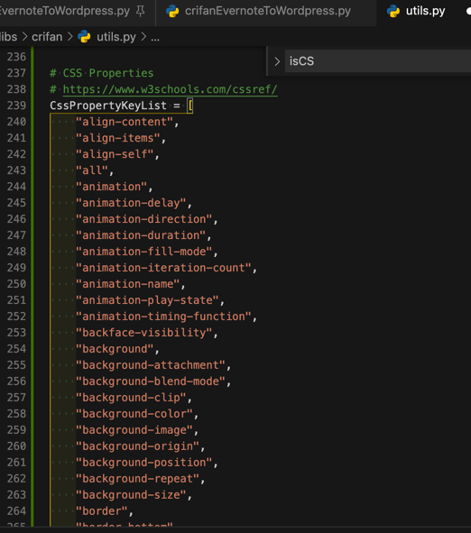

从css的属性的表格中提取出属性的key的列表
从
CSS Properties - CSS Reference
中想要获取到所有的属性key的列表
去用VSCode的正则处理
拷贝过去：
align-content Specifies the alignment between the lines inside a flexible container when the items do not use all available space
align-items Specifies the alignment for items inside a flexible container
align-self Specifies the alignment for selected items inside a flexible container
all Resets all properties (except unicode-bidi and direction)
animation A shorthand property for all the animation-* properties
animation-delay Specifies a delay for the start of an animation
animation-direction Specifies whether an animation should be played forwards, backwards or in alternate cycles
animation-duration Specifies how long an animation should take to complete one cycle
animation-fill-mode Specifies a style for the element when the animation is not playing (before it starts, after it ends, or both)
animation-iteration-count Specifies the number of times an animation should be played
animation-name Specifies a name for the @keyframes animation
animation-play-state Specifies whether the animation is running or paused
animation-timing-function Specifies the speed curve of an animation
B
backface-visibility Defines whether or not the back face of an element should be visible when facing the user
background A shorthand property for all the background-* properties
background-attachment Sets whether a background image scrolls with the rest of the page, or is fixed
background-blend-mode Specifies the blending mode of each background layer (color/image)
background-clip Defines how far the background (color or image) should extend within an element
background-color Specifies the background color of an element
background-image Specifies one or more background images for an element
background-origin Specifies the origin position of a background image
background-position Specifies the position of a background image
background-repeat Sets if/how a background image will be repeated
background-size Specifies the size of the background images
border A shorthand property for border-width, border-style and border-color
border-bottom A shorthand property for border-bottom-width, border-bottom-style and border-bottom-color
border-bottom-color Sets the color of the bottom border
border-bottom-left-radius Defines the radius of the border of the bottom-left corner
border-bottom-right-radius Defines the radius of the border of the bottom-right corner
border-bottom-style Sets the style of the bottom border
border-bottom-width Sets the width of the bottom border
border-collapse Sets whether table borders should collapse into a single border or be separated
border-color Sets the color of the four borders
border-image A shorthand property for all the border-image-* properties
border-image-outset Specifies the amount by which the border image area extends beyond the border box
border-image-repeat Specifies whether the border image should be repeated, rounded or stretched
border-image-slice Specifies how to slice the border image
border-image-source Specifies the path to the image to be used as a border
border-image-width Specifies the width of the border image
border-left A shorthand property for all the border-left-* properties
border-left-color Sets the color of the left border
border-left-style Sets the style of the left border
border-left-width Sets the width of the left border
border-radius A shorthand property for the four border-*-radius properties
border-right A shorthand property for all the border-right-* properties
border-right-color Sets the color of the right border
border-right-style Sets the style of the right border
border-right-width Sets the width of the right border
border-spacing Sets the distance between the borders of adjacent cells
border-style Sets the style of the four borders
border-top A shorthand property for border-top-width, border-top-style and border-top-color
border-top-color Sets the color of the top border
border-top-left-radius Defines the radius of the border of the top-left corner
border-top-right-radius Defines the radius of the border of the top-right corner
border-top-style Sets the style of the top border
border-top-width Sets the width of the top border
border-width Sets the width of the four borders
bottom Sets the elements position, from the bottom of its parent element
box-decoration-break Sets the behavior of the background and border of an element at page-break, or, for in-line elements, at line-break.
box-shadow Attaches one or more shadows to an element
box-sizing Defines how the width and height of an element are calculated: should they include padding and borders, or not
break-after Specifies whether or not a page-, column-, or region-break should occur after the specified element
break-before Specifies whether or not a page-, column-, or region-break should occur before the specified element
break-inside Specifies whether or not a page-, column-, or region-break should occur inside the specified element
C
caption-side Specifies the placement of a table caption
caret-color Specifies the color of the cursor (caret) in inputs, textareas, or any element that is editable
@charset Specifies the character encoding used in the style sheet
clear Specifies on which sides of an element floating elements are not allowed to float
clip Clips an absolutely positioned element
color Sets the color of text
column-count Specifies the number of columns an element should be divided into
column-fill Specifies how to fill columns, balanced or not
column-gap Specifies the gap between the columns
column-rule A shorthand property for all the column-rule-* properties
column-rule-color Specifies the color of the rule between columns
column-rule-style Specifies the style of the rule between columns
column-rule-width Specifies the width of the rule between columns
column-span Specifies how many columns an element should span across
column-width Specifies the column width
columns A shorthand property for column-width and column-count
content Used with the :before and :after pseudo-elements, to insert generated content
counter-increment Increases or decreases the value of one or more CSS counters
counter-reset Creates or resets one or more CSS counters
cursor Specifies the mouse cursor to be displayed when pointing over an element
D
direction Specifies the text direction/writing direction
display Specifies how a certain HTML element should be displayed
E
empty-cells Specifies whether or not to display borders and background on empty cells in a table
F
filter Defines effects (e.g. blurring or color shifting) on an element before the element is displayed
flex A shorthand property for the flex-grow, flex-shrink, and the flex-basis properties
flex-basis Specifies the initial length of a flexible item
flex-direction Specifies the direction of the flexible items
flex-flow A shorthand property for the flex-direction and the flex-wrap properties
flex-grow Specifies how much the item will grow relative to the rest
flex-shrink Specifies how the item will shrink relative to the rest
flex-wrap Specifies whether the flexible items should wrap or not
float Specifies whether or not a box should float
font A shorthand property for the font-style, font-variant, font-weight, font-size/line-height, and the font-family properties
@font-face A rule that allows websites to download and use fonts other than the "web-safe" fonts
font-family Specifies the font family for text
font-feature-settings Allows control over advanced typographic features in OpenType fonts
@font-feature-values Allows authors to use a common name in font-variant-alternate for feature activated differently in OpenType
font-kerning Controls the usage of the kerning information (how letters are spaced)
font-language-override Controls the usage of language-specific glyphs in a typeface
font-size Specifies the font size of text
font-size-adjust Preserves the readability of text when font fallback occurs
font-stretch Selects a normal, condensed, or expanded face from a font family
font-style Specifies the font style for text
font-synthesis Controls which missing typefaces (bold or italic) may be synthesized by the browser
font-variant Specifies whether or not a text should be displayed in a small-caps font
font-variant-alternates Controls the usage of alternate glyphs associated to alternative names defined in @font-feature-values
font-variant-caps Controls the usage of alternate glyphs for capital letters
font-variant-east-asian Controls the usage of alternate glyphs for East Asian scripts (e.g Japanese and Chinese)
font-variant-ligatures Controls which ligatures and contextual forms are used in textual content of the elements it applies to
font-variant-numeric Controls the usage of alternate glyphs for numbers, fractions, and ordinal markers
font-variant-position Controls the usage of alternate glyphs of smaller size positioned as superscript or subscript regarding the baseline of the font
font-weight Specifies the weight of a font
G
grid A shorthand property for the grid-template-rows, grid-template-columns, grid-template-areas, grid-auto-rows, grid-auto-columns, and the grid-auto-flow properties
grid-area Either specifies a name for the grid item, or this property is a shorthand property for the grid-row-start, grid-column-start, grid-row-end, and grid-column-end properties
grid-auto-columns Specifies a default column size
grid-auto-flow Specifies how auto-placed items are inserted in the grid
grid-auto-rows Specifies a default row size
grid-column A shorthand property for the grid-column-start and the grid-column-end properties
grid-column-end Specifies where to end the grid item
grid-column-gap Specifies the size of the gap between columns
grid-column-start Specifies where to start the grid item
grid-gap A shorthand property for the grid-row-gap and grid-column-gap properties
grid-row A shorthand property for the grid-row-start and the grid-row-end properties
grid-row-end Specifies where to end the grid item
grid-row-gap Specifies the size of the gap between rows
grid-row-start Specifies where to start the grid item
grid-template A shorthand property for the grid-template-rows, grid-template-columns and grid-areas properties
grid-template-areas Specifies how to display columns and rows, using named grid items
grid-template-columns Specifies the size of the columns, and how many columns in a grid layout
grid-template-rows Specifies the size of the rows in a grid layout
H
hanging-punctuation Specifies whether a punctuation character may be placed outside the line box
height Sets the height of an element
hyphens Sets how to split words to improve the layout of paragraphs
I
image-rendering Gives a hint to the browser about what aspects of an image are most important to preserve when the image is scaled
@import Allows you to import a style sheet into another style sheet
isolation Defines whether an element must create a new stacking content
J
justify-content Specifies the alignment between the items inside a flexible container when the items do not use all available space
K
@keyframes Specifies the animation code
L
left Specifies the left position of a positioned element
letter-spacing Increases or decreases the space between characters in a text
line-break Specifies how/if to break lines
line-height Sets the line height
list-style Sets all the properties for a list in one declaration
list-style-image Specifies an image as the list-item marker
list-style-position Specifies the position of the list-item markers (bullet points)
list-style-type Specifies the type of list-item marker
M
margin Sets all the margin properties in one declaration
margin-bottom Sets the bottom margin of an element
margin-left Sets the left margin of an element
margin-right Sets the right margin of an element
margin-top Sets the top margin of an element
mask Hides an element by masking or clipping the image at specific places
mask-type Specifies whether a mask element is used as a luminance or an alpha mask
max-height Sets the maximum height of an element
max-width Sets the maximum width of an element
@media Sets the style rules for different media types/devices/sizes
min-height Sets the minimum height of an element
min-width Sets the minimum width of an element
mix-blend-mode Specifies how an element's content should blend with its direct parent background
O
object-fit Specifies how the contents of a replaced element should be fitted to the box established by its used height and width
object-position Specifies the alignment of the replaced element inside its box
opacity Sets the opacity level for an element
order Sets the order of the flexible item, relative to the rest
orphans Sets the minimum number of lines that must be left at the bottom of a page when a page break occurs inside an element
outline A shorthand property for the outline-width, outline-style, and the outline-color properties
outline-color Sets the color of an outline
outline-offset Offsets an outline, and draws it beyond the border edge
outline-style Sets the style of an outline
outline-width Sets the width of an outline
overflow
Specifies what happens if content overflows an element's box
overflow-wrap Specifies whether or not the browser may break lines within words in order to prevent overflow (when a string is too long to fit its containing box)
overflow-x Specifies whether or not to clip the left/right edges of the content, if it overflows the element's content area
overflow-y Specifies whether or not to clip the top/bottom edges of the content, if it overflows the element's content area
P
padding A shorthand property for all the padding-* properties
padding-bottom Sets the bottom padding of an element
padding-left Sets the left padding of an element
padding-right Sets the right padding of an element
padding-top Sets the top padding of an element
page-break-after Sets the page-break behavior after an element
page-break-before Sets the page-break behavior before an element
page-break-inside Sets the page-break behavior inside an element
perspective Gives a 3D-positioned element some perspective
perspective-origin Defines at which position the user is looking at the 3D-positioned element
pointer-events Defines whether or not an element reacts to pointer events
position Specifies the type of positioning method used for an element (static, relative, absolute or fixed)
Q
quotes Sets the type of quotation marks for embedded quotations
R
resize Defines if (and how) an element is resizable by the user
right Specifies the right position of a positioned element
S
scroll-behavior Specifies whether to smoothly animate the scroll position in a scrollable box, instead of a straight jump
T
tab-size Specifies the width of a tab character
table-layout Defines the algorithm used to lay out table cells, rows, and columns
text-align Specifies the horizontal alignment of text
text-align-last Describes how the last line of a block or a line right before a forced line break is aligned when text-align is "justify"
text-combine-upright Specifies the combination of multiple characters into the space of a single character
text-decoration Specifies the decoration added to text
text-decoration-color Specifies the color of the text-decoration
text-decoration-line Specifies the type of line in a text-decoration
text-decoration-style Specifies the style of the line in a text decoration
text-indent Specifies the indentation of the first line in a text-block
text-justify Specifies the justification method used when text-align is "justify"
text-orientation Defines the orientation of the text in a line
text-overflow Specifies what should happen when text overflows the containing element
text-shadow Adds shadow to text
text-transform Controls the capitalization of text
text-underline-position Specifies the position of the underline which is set using the text-decoration property
top Specifies the top position of a positioned element
transform Applies a 2D or 3D transformation to an element
transform-origin Allows you to change the position on transformed elements
transform-style Specifies how nested elements are rendered in 3D space
transition A shorthand property for all the transition-* properties
transition-delay Specifies when the transition effect will start
transition-duration Specifies how many seconds or milliseconds a transition effect takes to complete
transition-property Specifies the name of the CSS property the transition effect is for
transition-timing-function Specifies the speed curve of the transition effect
U
unicode-bidi Used together with the direction property to set or return whether the text should be overridden to support multiple languages in the same document
user-select Specifies whether the text of an element can be selected
V
vertical-align Sets the vertical alignment of an element
visibility Specifies whether or not an element is visible
W
white-space Specifies how white-space inside an element is handled
widows Sets the minimum number of lines that must be left at the top of a page when a page break occurs inside an element
width Sets the width of an element
word-break Specifies how words should break when reaching the end of a line
word-spacing Increases or decreases the space between words in a text
word-wrap Allows long, unbreakable words to be broken and wrap to the next line
writing-mode Specifies whether lines of text are laid out horizontally or vertically
Z
z-index Sets the stack order of a positioned element
去掉其中的大写字母
正则：
^[A-Z]$\n
变成：
align-content Specifies the alignment between the lines inside a flexible container when the items do not use all available space
align-items Specifies the alignment for items inside a flexible container
align-self Specifies the alignment for selected items inside a flexible container
all Resets all properties (except unicode-bidi and direction)
animation A shorthand property for all the animation-* properties
animation-delay Specifies a delay for the start of an animation
animation-direction Specifies whether an animation should be played forwards, backwards or in alternate cycles
animation-duration Specifies how long an animation should take to complete one cycle
animation-fill-mode Specifies a style for the element when the animation is not playing (before it starts, after it ends, or both)
animation-iteration-count Specifies the number of times an animation should be played
animation-name Specifies a name for the @keyframes animation
animation-play-state Specifies whether the animation is running or paused
animation-timing-function Specifies the speed curve of an animation
backface-visibility Defines whether or not the back face of an element should be visible when facing the user
background A shorthand property for all the background-* properties
background-attachment Sets whether a background image scrolls with the rest of the page, or is fixed
background-blend-mode Specifies the blending mode of each background layer (color/image)
background-clip Defines how far the background (color or image) should extend within an element
background-color Specifies the background color of an element
background-image Specifies one or more background images for an element
background-origin Specifies the origin position of a background image
background-position Specifies the position of a background image
background-repeat Sets if/how a background image will be repeated
background-size Specifies the size of the background images
border A shorthand property for border-width, border-style and border-color
border-bottom A shorthand property for border-bottom-width, border-bottom-style and border-bottom-color
border-bottom-color Sets the color of the bottom border
border-bottom-left-radius Defines the radius of the border of the bottom-left corner
border-bottom-right-radius Defines the radius of the border of the bottom-right corner
border-bottom-style Sets the style of the bottom border
border-bottom-width Sets the width of the bottom border
border-collapse Sets whether table borders should collapse into a single border or be separated
border-color Sets the color of the four borders
border-image A shorthand property for all the border-image-* properties
border-image-outset Specifies the amount by which the border image area extends beyond the border box
border-image-repeat Specifies whether the border image should be repeated, rounded or stretched
border-image-slice Specifies how to slice the border image
border-image-source Specifies the path to the image to be used as a border
border-image-width Specifies the width of the border image
border-left A shorthand property for all the border-left-* properties
border-left-color Sets the color of the left border
border-left-style Sets the style of the left border
border-left-width Sets the width of the left border
border-radius A shorthand property for the four border-*-radius properties
border-right A shorthand property for all the border-right-* properties
border-right-color Sets the color of the right border
border-right-style Sets the style of the right border
border-right-width Sets the width of the right border
border-spacing Sets the distance between the borders of adjacent cells
border-style Sets the style of the four borders
border-top A shorthand property for border-top-width, border-top-style and border-top-color
border-top-color Sets the color of the top border
border-top-left-radius Defines the radius of the border of the top-left corner
border-top-right-radius Defines the radius of the border of the top-right corner
border-top-style Sets the style of the top border
border-top-width Sets the width of the top border
border-width Sets the width of the four borders
bottom Sets the elements position, from the bottom of its parent element
box-decoration-break Sets the behavior of the background and border of an element at page-break, or, for in-line elements, at line-break.
box-shadow Attaches one or more shadows to an element
box-sizing Defines how the width and height of an element are calculated: should they include padding and borders, or not
break-after Specifies whether or not a page-, column-, or region-break should occur after the specified element
break-before Specifies whether or not a page-, column-, or region-break should occur before the specified element
break-inside Specifies whether or not a page-, column-, or region-break should occur inside the specified element
caption-side Specifies the placement of a table caption
caret-color Specifies the color of the cursor (caret) in inputs, textareas, or any element that is editable
@charset Specifies the character encoding used in the style sheet
clear Specifies on which sides of an element floating elements are not allowed to float
clip Clips an absolutely positioned element
color Sets the color of text
column-count Specifies the number of columns an element should be divided into
column-fill Specifies how to fill columns, balanced or not
column-gap Specifies the gap between the columns
column-rule A shorthand property for all the column-rule-* properties
column-rule-color Specifies the color of the rule between columns
column-rule-style Specifies the style of the rule between columns
column-rule-width Specifies the width of the rule between columns
column-span Specifies how many columns an element should span across
column-width Specifies the column width
columns A shorthand property for column-width and column-count
content Used with the :before and :after pseudo-elements, to insert generated content
counter-increment Increases or decreases the value of one or more CSS counters
counter-reset Creates or resets one or more CSS counters
cursor Specifies the mouse cursor to be displayed when pointing over an element
direction Specifies the text direction/writing direction
display Specifies how a certain HTML element should be displayed
empty-cells Specifies whether or not to display borders and background on empty cells in a table
filter Defines effects (e.g. blurring or color shifting) on an element before the element is displayed
flex A shorthand property for the flex-grow, flex-shrink, and the flex-basis properties
flex-basis Specifies the initial length of a flexible item
flex-direction Specifies the direction of the flexible items
flex-flow A shorthand property for the flex-direction and the flex-wrap properties
flex-grow Specifies how much the item will grow relative to the rest
flex-shrink Specifies how the item will shrink relative to the rest
flex-wrap Specifies whether the flexible items should wrap or not
float Specifies whether or not a box should float
font A shorthand property for the font-style, font-variant, font-weight, font-size/line-height, and the font-family properties
@font-face A rule that allows websites to download and use fonts other than the "web-safe" fonts
font-family Specifies the font family for text
font-feature-settings Allows control over advanced typographic features in OpenType fonts
@font-feature-values Allows authors to use a common name in font-variant-alternate for feature activated differently in OpenType
font-kerning Controls the usage of the kerning information (how letters are spaced)
font-language-override Controls the usage of language-specific glyphs in a typeface
font-size Specifies the font size of text
font-size-adjust Preserves the readability of text when font fallback occurs
font-stretch Selects a normal, condensed, or expanded face from a font family
font-style Specifies the font style for text
font-synthesis Controls which missing typefaces (bold or italic) may be synthesized by the browser
font-variant Specifies whether or not a text should be displayed in a small-caps font
font-variant-alternates Controls the usage of alternate glyphs associated to alternative names defined in @font-feature-values
font-variant-caps Controls the usage of alternate glyphs for capital letters
font-variant-east-asian Controls the usage of alternate glyphs for East Asian scripts (e.g Japanese and Chinese)
font-variant-ligatures Controls which ligatures and contextual forms are used in textual content of the elements it applies to
font-variant-numeric Controls the usage of alternate glyphs for numbers, fractions, and ordinal markers
font-variant-position Controls the usage of alternate glyphs of smaller size positioned as superscript or subscript regarding the baseline of the font
font-weight Specifies the weight of a font
grid A shorthand property for the grid-template-rows, grid-template-columns, grid-template-areas, grid-auto-rows, grid-auto-columns, and the grid-auto-flow properties
grid-area Either specifies a name for the grid item, or this property is a shorthand property for the grid-row-start, grid-column-start, grid-row-end, and grid-column-end properties
grid-auto-columns Specifies a default column size
grid-auto-flow Specifies how auto-placed items are inserted in the grid
grid-auto-rows Specifies a default row size
grid-column A shorthand property for the grid-column-start and the grid-column-end properties
grid-column-end Specifies where to end the grid item
grid-column-gap Specifies the size of the gap between columns
grid-column-start Specifies where to start the grid item
grid-gap A shorthand property for the grid-row-gap and grid-column-gap properties
grid-row A shorthand property for the grid-row-start and the grid-row-end properties
grid-row-end Specifies where to end the grid item
grid-row-gap Specifies the size of the gap between rows
grid-row-start Specifies where to start the grid item
grid-template A shorthand property for the grid-template-rows, grid-template-columns and grid-areas properties
grid-template-areas Specifies how to display columns and rows, using named grid items
grid-template-columns Specifies the size of the columns, and how many columns in a grid layout
grid-template-rows Specifies the size of the rows in a grid layout
hanging-punctuation Specifies whether a punctuation character may be placed outside the line box
height Sets the height of an element
hyphens Sets how to split words to improve the layout of paragraphs
image-rendering Gives a hint to the browser about what aspects of an image are most important to preserve when the image is scaled
@import Allows you to import a style sheet into another style sheet
isolation Defines whether an element must create a new stacking content
justify-content Specifies the alignment between the items inside a flexible container when the items do not use all available space
@keyframes Specifies the animation code
left Specifies the left position of a positioned element
letter-spacing Increases or decreases the space between characters in a text
line-break Specifies how/if to break lines
line-height Sets the line height
list-style Sets all the properties for a list in one declaration
list-style-image Specifies an image as the list-item marker
list-style-position Specifies the position of the list-item markers (bullet points)
list-style-type Specifies the type of list-item marker
margin Sets all the margin properties in one declaration
margin-bottom Sets the bottom margin of an element
margin-left Sets the left margin of an element
margin-right Sets the right margin of an element
margin-top Sets the top margin of an element
mask Hides an element by masking or clipping the image at specific places
mask-type Specifies whether a mask element is used as a luminance or an alpha mask
max-height Sets the maximum height of an element
max-width Sets the maximum width of an element
@media Sets the style rules for different media types/devices/sizes
min-height Sets the minimum height of an element
min-width Sets the minimum width of an element
mix-blend-mode Specifies how an element's content should blend with its direct parent background
object-fit Specifies how the contents of a replaced element should be fitted to the box established by its used height and width
object-position Specifies the alignment of the replaced element inside its box
opacity Sets the opacity level for an element
order Sets the order of the flexible item, relative to the rest
orphans Sets the minimum number of lines that must be left at the bottom of a page when a page break occurs inside an element
outline A shorthand property for the outline-width, outline-style, and the outline-color properties
outline-color Sets the color of an outline
outline-offset Offsets an outline, and draws it beyond the border edge
outline-style Sets the style of an outline
outline-width Sets the width of an outline
overflow
Specifies what happens if content overflows an element's box
overflow-wrap Specifies whether or not the browser may break lines within words in order to prevent overflow (when a string is too long to fit its containing box)
overflow-x Specifies whether or not to clip the left/right edges of the content, if it overflows the element's content area
overflow-y Specifies whether or not to clip the top/bottom edges of the content, if it overflows the element's content area
padding A shorthand property for all the padding-* properties
padding-bottom Sets the bottom padding of an element
padding-left Sets the left padding of an element
padding-right Sets the right padding of an element
padding-top Sets the top padding of an element
page-break-after Sets the page-break behavior after an element
page-break-before Sets the page-break behavior before an element
page-break-inside Sets the page-break behavior inside an element
perspective Gives a 3D-positioned element some perspective
perspective-origin Defines at which position the user is looking at the 3D-positioned element
pointer-events Defines whether or not an element reacts to pointer events
position Specifies the type of positioning method used for an element (static, relative, absolute or fixed)
quotes Sets the type of quotation marks for embedded quotations
resize Defines if (and how) an element is resizable by the user
right Specifies the right position of a positioned element
scroll-behavior Specifies whether to smoothly animate the scroll position in a scrollable box, instead of a straight jump
tab-size Specifies the width of a tab character
table-layout Defines the algorithm used to lay out table cells, rows, and columns
text-align Specifies the horizontal alignment of text
text-align-last Describes how the last line of a block or a line right before a forced line break is aligned when text-align is "justify"
text-combine-upright Specifies the combination of multiple characters into the space of a single character
text-decoration Specifies the decoration added to text
text-decoration-color Specifies the color of the text-decoration
text-decoration-line Specifies the type of line in a text-decoration
text-decoration-style Specifies the style of the line in a text decoration
text-indent Specifies the indentation of the first line in a text-block
text-justify Specifies the justification method used when text-align is "justify"
text-orientation Defines the orientation of the text in a line
text-overflow Specifies what should happen when text overflows the containing element
text-shadow Adds shadow to text
text-transform Controls the capitalization of text
text-underline-position Specifies the position of the underline which is set using the text-decoration property
top Specifies the top position of a positioned element
transform Applies a 2D or 3D transformation to an element
transform-origin Allows you to change the position on transformed elements
transform-style Specifies how nested elements are rendered in 3D space
transition A shorthand property for all the transition-* properties
transition-delay Specifies when the transition effect will start
transition-duration Specifies how many seconds or milliseconds a transition effect takes to complete
transition-property Specifies the name of the CSS property the transition effect is for
transition-timing-function Specifies the speed curve of the transition effect
unicode-bidi Used together with the direction property to set or return whether the text should be overridden to support multiple languages in the same document
user-select Specifies whether the text of an element can be selected
vertical-align Sets the vertical alignment of an element
visibility Specifies whether or not an element is visible
white-space Specifies how white-space inside an element is handled
widows Sets the minimum number of lines that must be left at the top of a page when a page break occurs inside an element
width Sets the width of an element
word-break Specifies how words should break when reaching the end of a line
word-spacing Increases or decreases the space between words in a text
word-wrap Allows long, unbreakable words to be broken and wrap to the next line
writing-mode Specifies whether lines of text are laid out horizontally or vertically
z-index Sets the stack order of a positioned element
把overflow后面的空格改为 tab
正则：
([\w+\-@]+)\t.+$
"$1",
替换成：
"align-content",
"align-items",
"align-self",
"all",
"animation",
"animation-delay",
"animation-direction",
"animation-duration",
"animation-fill-mode",
"animation-iteration-count",
"animation-name",
"animation-play-state",
"animation-timing-function",
"backface-visibility",
"background",
"background-attachment",
"background-blend-mode",
"background-clip",
"background-color",
"background-image",
"background-origin",
"background-position",
"background-repeat",
"background-size",
"border",
"border-bottom",
"border-bottom-color",
"border-bottom-left-radius",
"border-bottom-right-radius",
"border-bottom-style",
"border-bottom-width",
"border-collapse",
"border-color",
"border-image",
"border-image-outset",
"border-image-repeat",
"border-image-slice",
"border-image-source",
"border-image-width",
"border-left",
"border-left-color",
"border-left-style",
"border-left-width",
"border-radius",
"border-right",
"border-right-color",
"border-right-style",
"border-right-width",
"border-spacing",
"border-style",
"border-top",
"border-top-color",
"border-top-left-radius",
"border-top-right-radius",
"border-top-style",
"border-top-width",
"border-width",
"bottom",
"box-decoration-break",
"box-shadow",
"box-sizing",
"break-after",
"break-before",
"break-inside",
"caption-side",
"caret-color",
"@charset",
"clear",
"clip",
"color",
"column-count",
"column-fill",
"column-gap",
"column-rule",
"column-rule-color",
"column-rule-style",
"column-rule-width",
"column-span",
"column-width",
"columns",
"content",
"counter-increment",
"counter-reset",
"cursor",
"direction",
"display",
"empty-cells",
"filter",
"flex",
"flex-basis",
"flex-direction",
"flex-flow",
"flex-grow",
"flex-shrink",
"flex-wrap",
"float",
"font",
"@font-face",
"font-family",
"font-feature-settings",
"@font-feature-values",
"font-kerning",
"font-language-override",
"font-size",
"font-size-adjust",
"font-stretch",
"font-style",
"font-synthesis",
"font-variant",
"font-variant-alternates",
"font-variant-caps",
"font-variant-east-asian",
"font-variant-ligatures",
"font-variant-numeric",
"font-variant-position",
"font-weight",
"grid",
"grid-area",
"grid-auto-columns",
"grid-auto-flow",
"grid-auto-rows",
"grid-column",
"grid-column-end",
"grid-column-gap",
"grid-column-start",
"grid-gap",
"grid-row",
"grid-row-end",
"grid-row-gap",
"grid-row-start",
"grid-template",
"grid-template-areas",
"grid-template-columns",
"grid-template-rows",
"hanging-punctuation",
"height",
"hyphens",
"image-rendering",
"@import",
"isolation",
"justify-content",
"@keyframes",
"left",
"letter-spacing",
"line-break",
"line-height",
"list-style",
"list-style-image",
"list-style-position",
"list-style-type",
"margin",
"margin-bottom",
"margin-left",
"margin-right",
"margin-top",
"mask",
"mask-type",
"max-height",
"max-width",
"@media",
"min-height",
"min-width",
"mix-blend-mode",
"object-fit",
"object-position",
"opacity",
"order",
"orphans",
"outline",
"outline-color",
"outline-offset",
"outline-style",
"outline-width",
"overflow",
"overflow-wrap",
"overflow-x",
"overflow-y",
"padding",
"padding-bottom",
"padding-left",
"padding-right",
"padding-top",
"page-break-after",
"page-break-before",
"page-break-inside",
"perspective",
"perspective-origin",
"pointer-events",
"position",
"quotes",
"resize",
"right",
"scroll-behavior",
"tab-size",
"table-layout",
"text-align",
"text-align-last",
"text-combine-upright",
"text-decoration",
"text-decoration-color",
"text-decoration-line",
"text-decoration-style",
"text-indent",
"text-justify",
"text-orientation",
"text-overflow",
"text-shadow",
"text-transform",
"text-underline-position",
"top",
"transform",
"transform-origin",
"transform-style",
"transition",
"transition-delay",
"transition-duration",
"transition-property",
"transition-timing-function",
"unicode-bidi",
"user-select",
"vertical-align",
"visibility",
"white-space",
"widows",
"width",
"word-break",
"word-spacing",
"word-wrap",
"writing-mode",
"z-index",
放到代码中：

即可使用。